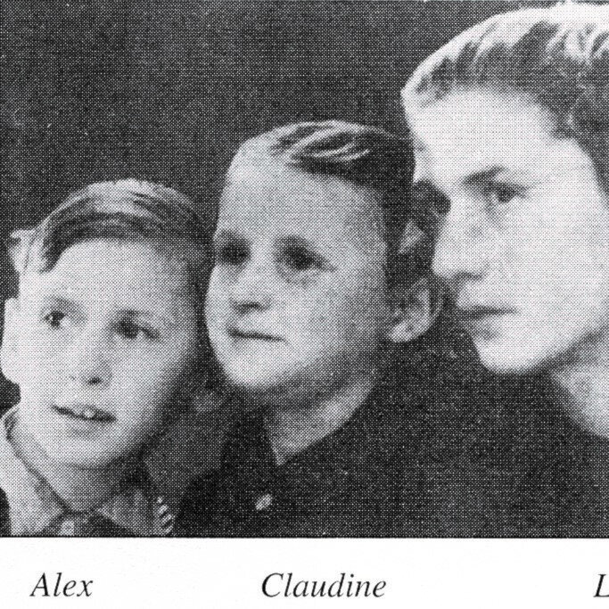

Portrait d’archive
Enfants Halaunbrenner
Claudine HALAUNBRENNER
Nom : HALAUNBRENNER
Prénom(s) : Claudine
Date naissance : 02/04/1939
Âge (ans) : 5
Lieu naissance : Paris 04
Pays ou département : Seine
Lieu rassemblement : Lyon
Dernière adresse : ?
Ville : Izieu (Ain)
Code postal : 01300
N° Convoi : 76
Date déportation : 30/06/1944
Informations diverses : Halaunbrenner (Claudine), née le 2 avril 1939 à Paris (4e) (Seine), décédée le 5 juillet 1944 à Auschwitz (Pologne) et non le 30 juin 1944 à Drancy (Seine) (JO n°34 du 10/2/1994)
Lieu de déportation : Auschwitz
Lieu de départ : Drancy
Nombre total de déporté·e·s du convoi : 1100
Gazé·e·s à l'arrivée : 479 (43,5 %)
Survivant·e·s en 1945 : 182 (16,5 %)
Mina HALAUNBRENNER
Nom : HALAUNBRENNER
Prénom(s) : Mina
Date naissance : 25/06/1935
Âge (ans) : 9
Lieu naissance : Paris 04
Pays ou département : Seine
Lieu rassemblement : Lyon
Dernière adresse : ?
Ville : Izieu (Ain)
Code postal : 01300
N° Convoi : 76
Date déportation : 30/06/1944
Informations diverses : Halaunbrenner (Mina), née le 25 juin 1935 à Paris (4e) (Seine), décédée le 5 juillet 1944 à Auschwitz (Pologne) et non le 30 juin 1944 à Drancy (Seine) (JO n°34 du 10/2/1994)
Lieu de déportation : Auschwitz
Lieu de départ : Drancy
Nombre total de déporté·e·s du convoi : 1100
Gazé·e·s à l'arrivée : 479 (43,5 %)
Survivant·e·s en 1945 : 182 (16,5 %)
Léon HALAUNBRENNER
Léon HALAUNBRENNER est né le 21/04/1929 à Drohobycz en Pologne.
Rassemblé à Lyon, il est déporté à Auschwitz le 17/12/1943 par le convoi n°63. Il est mort en déportation le 22/12/1943. Il avait 14 ans.
Travaillait dans une fabrique de soieries à VILLEURBANNE. Arrêté le 24/10/1943 avec Jacob, son père (12/7/1902 en Pologne) fusillé le 24/11/43 à la Gestapo de Lyon. Frère de Mina et Claudine, déportées et de Monique et d'Alexandre,non déportés.
Dernière adresse connue : 14, rue Pierre Loti 69100 (Villeurbanne)
Nom : HALAUNBRENNER
Prénom(s) : Léon
Date naissance : 21/04/1929
Âge (ans) : 14
Lieu naissance : Drohobycz
Pays ou département : Pologne
Lieu rassemblement : Lyon
Dernière adresse : 14, rue Pierre Loti
Ville : Villeurbanne
Code postal : 69100
N° Convoi : 63
Date déportation : 17/12/1943
Informations diverses : Il travaillait dans une fabrique de soieries à VILLEURBANNE en 1943. Arrêté en même temps que son père à leur domicile (chez leur cousin Joseph) le 24/10/1943. frère de Alexandre (28/10/1931 à Paris) non déporté, de Mina, de Claudine et de Monique (5/12/1941 à Paris) non déportée ; fils de Jacob (12/7/1902 en Pologne) fusillé le 24/11/43 au siège de la Gestapo à Lyon, et de Ita Rosa (7/8/1904 en Pologne) non déportée décédé en 1988 [Dossier du collège de Grigny par M. Boucly, aujourd'hui Principal du Collège Longchambon].
Halaunbrenner (Léon), né le 21 avril 1929 à Dokrobicz (Pologne), décédé le 22 décembre 1943 à Auschwitz (Pologne) et non le 17 décembre 1943 à Drancy (Seine) (JO n°34 du 10/2/1994).
Lieu de déportation : Auschwitz
Lieu de départ : Drancy
Nombre total de déporté·e·s du convoi : 850
Gazé·e·s à l'arrivée : 505 (59,4 %)
Survivant·e·s en 1945 : 31 (3,6 %)